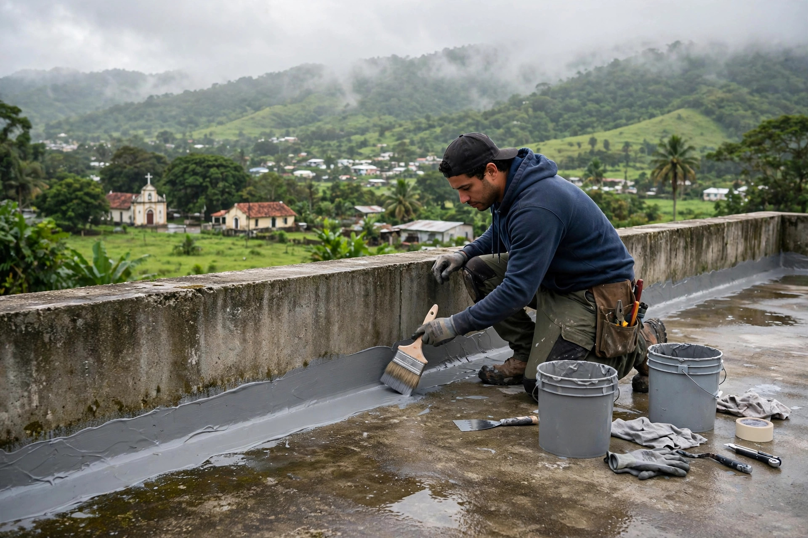

Morovis · Puerto Rico
Impermeabilización, reparación de grietas y lavado a presión en el corazón de la isla. Cotiza hoy por WhatsApp.

Galería
Lo que hacemos
Sellado completo del techo para frenar filtraciones y goteras.
Capa impermeable que protege tu casa de la lluvia fuerte.
Reparamos grietas y puntos débiles antes de sellar.
Lavado del techo para una base limpia antes del sellado.
Nosotros
Somos selladores de techo en Morovis, Puerto Rico. Preparamos, reparamos y sellamos tu techo para que aguante la lluvia del centro de la isla.
Dudas comunes
Un sellado bien aplicado dura varios años. La frecuencia depende del material, la exposición al sol y el mantenimiento. En la visita te orientamos según tu caso.
Sí. Reparamos las grietas y sellamos los puntos débiles antes de aplicar el sellador, para que el trabajo quede parejo y duradero.
Sí. El techo se lava a presión antes de sellar: eso quita mugre, moho y grasa para que el sellador agarre bien.
Escríbenos por WhatsApp al 787-862-4646. Coordinamos una visita y te damos el precio exacto según el tamaño y la condición del techo.
Sí, nuestros trabajos de sellado son garantizados. Contáctanos por WhatsApp para los detalles.
Contacto
Sitio web profesional
$1,000
$200
Sitios web profesionales creados por ManuPro para negocios de Puerto Rico.